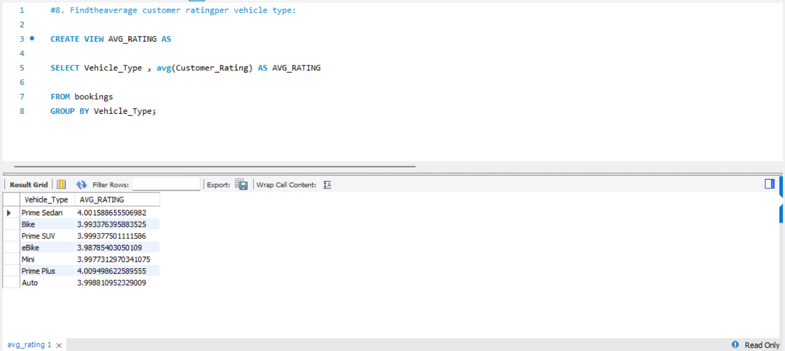

OLA Ride Prediction
An analytical project using SQL & Power BI to predict ride trends, cancellations, and revenue insights.
Problem Statement
In the rapidly evolving mobility sector, companies like OLA generate vast amounts of data daily from millions of rides. However, without structured analysis, it’s difficult for decision-makers to extract meaningful insights about customer behavior, driver efficiency, or operational bottlenecks. The challenge was to analyze OLA’s ride dataset and uncover patterns that could help improve business performance, customer satisfaction, and operational efficiency.
Solution Approach
- Writing SQL queries to explore and clean raw ride data stored in a database.
- Building an interactive Power BI dashboard to visualize key metrics.
- Providing data-driven recommendations based on insights.
- Demonstrating how business decisions can be informed through analytics.
SQL Queries

Dashboard Preview


*This dashboard visualizes ride trends, revenue insights, and cancellation patterns to help optimize ride-sharing operations.*
Key Insights Discovered (from Dashboard)
- Out of 103,024 total bookings, over 63,967 were successfully completed, showing strong platform reliability.
- Around 35.49% of cancellations were by drivers, mainly due to personal or car issues.
- 30.24% were by customers, with reasons like driver not moving or no proper updates.
- Driver unavailability also contributed notably to failed bookings.
- Week-on-week ride volumes show significant fluctuations, indicating peak and off-peak periods.
- Revenue is skewed towards a smaller set of high-value customers, showing a Pareto-like effect (top 5 customers contribute significantly).
- Cash and UPI are the most preferred, with credit and debit cards being lesser-used, showing a pattern in customer behavior.
- Ratings vary across regions and vehicle types; however, lower ratings are often correlated with cancellations or failed pickups.
Result / Impact
- Operational Improvements: Identified major pain points (e.g., driver cancellations, customer complaints) which can guide training and driver quality control.
- Demand Planning: The dashboard reveals ride volume trends by date, enabling better driver allocation in peak times and regions.
- Customer Segmentation: Insights into top-paying users and preferred payment methods help design targeted offers and loyalty programs.
- Product Optimization: Recognizing most used vehicle types and cancellation causes assists in improving ride options and communication systems.